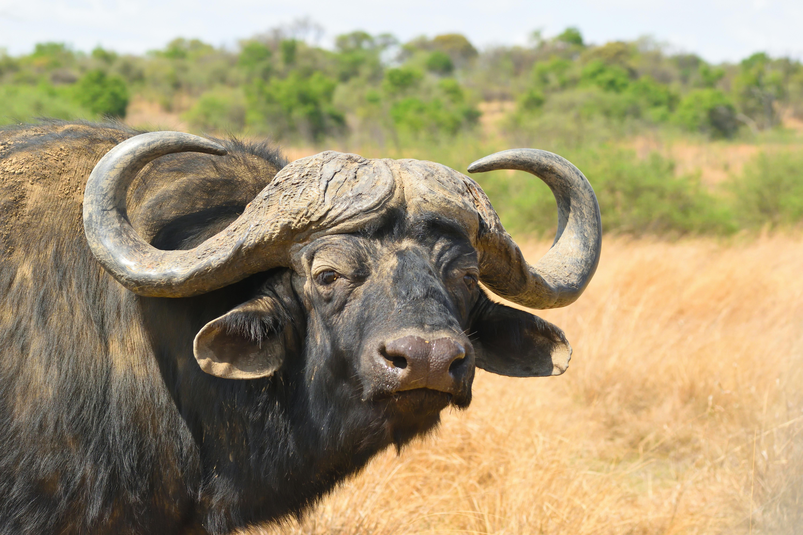

The Cape Buffalo
Diet & Habitat
Diet: Herbivore. Grazers that require water daily, making them rarely far from a permanent water source.
Habitat: Swamps and floodplains, as well as mopane grasslands and forests of the major African mountains.
Fun Facts
- The Cape Buffalo is widely regarded as one of the most dangerous animals in Africa.
- They have excellent memories and are known to ambush hunters that have previously wounded them.
- A buffalo's fused horns are called a "boss" and are strong enough to deflect bullets.